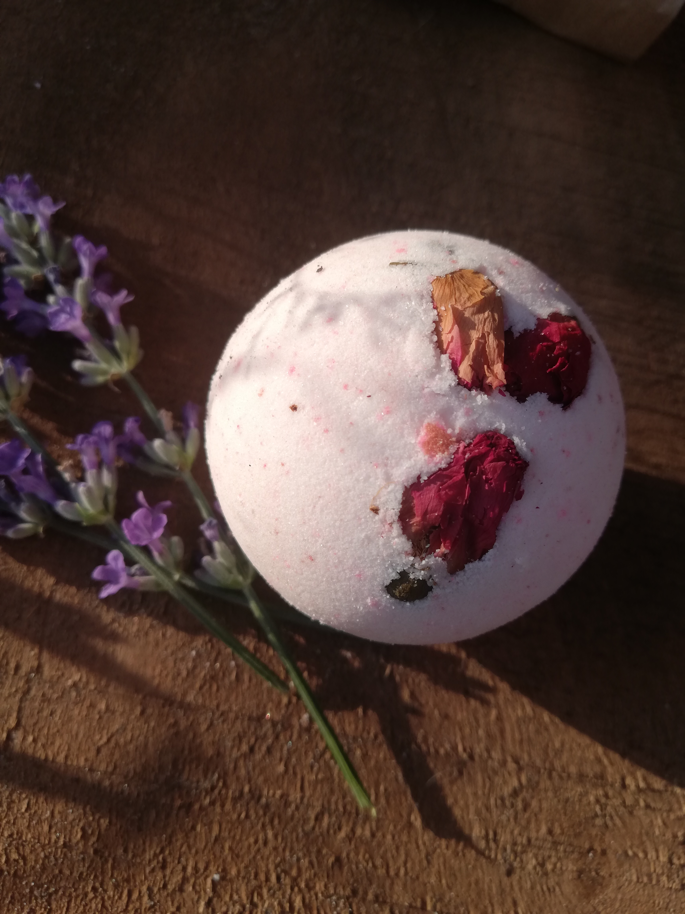
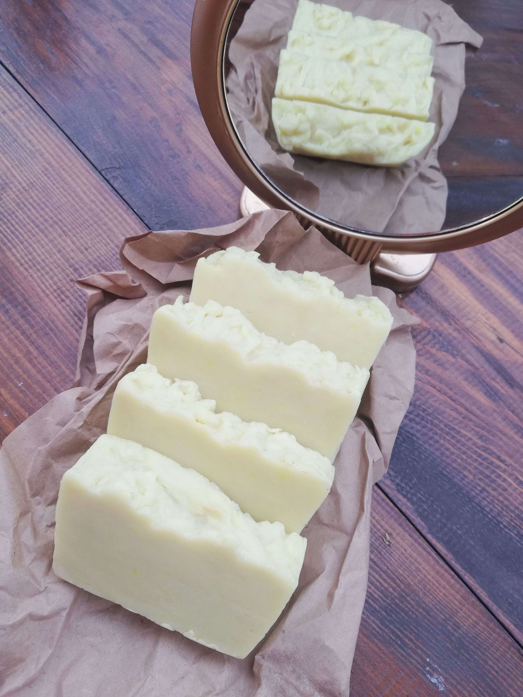
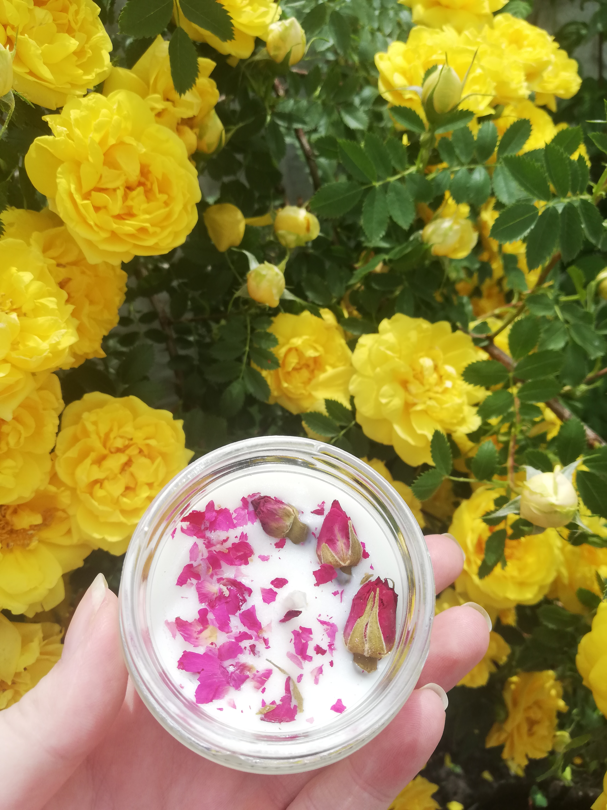
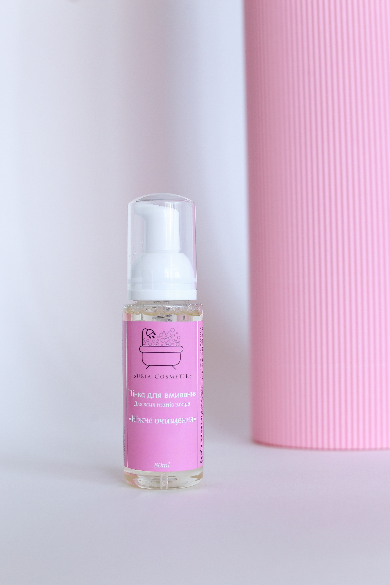

Наша історія
В делекому 2019 році, а якщо бути точним то 28 лютого 2019 року на просторах інстаграму з'явився наш перший допис. Ми повірили в себе, та вирішили продавати мило ручної роботи. Виготовленням ми займались вдома, пахло ніби на мильному заводі, аромат відчувався навіть на вулиці. Спочатку замовлення були від наших знайомих, а далі працювало сарафанне радіо. Спрацювало так що в нас зробила замовлення компнія "INVITRO" нашому щастю не було меж, адже для початківців які займаються справою від сили 2 тижні замовлення на 500 мил здавалося нереальним. Ви тільки уявіть об'єм! Було придбано 100кг мильної основи, яку ми перерізали вручну, розтопили, додали колір та віддушку і знову перерізали. Сумарно 200 кілограм. І як справжні підприємці після отримання коштів ми поїхали на море)

Ми думали, що так буде завжди, але походу лоханулись. Можна звісно сказати, що то все криза, карантин, війна і так далі, всі ми знаємо ці цікаві історії...
Спочатку було тілки мило, далі ми розширювали асортимент, замовляли і змінювали наліпки, деякі товари взагалі знімали з продажу, короче кажучи шукали себе. Дуже багато розвивалися, проходили різні курси, вдосконалювали продукцію. Можна ще багато чого розповідати але то буде нудно читати, кому цікаво welcome to buria cosmetiks
Приклад нашої продукції
Бомбочки для ванни
Мило з нуля
Свічки із соєвого воску
Пінка для вмивання